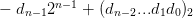
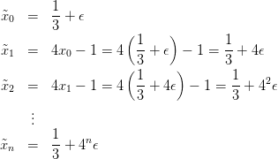
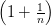
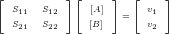
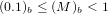
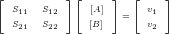
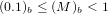
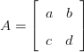

2.7 Mais exemplos
Exemplo 2.7.1. Considere o seguinte processo iterativo:

Observe que
x0 = 
,
x1 = 4 ⋅ − 1 =
− 1 = 
,
x2 = 
, ou seja, temos uma sequência
constante igual a

. No entanto, ao calcularmos no computador, usando o sistema
de numeração ’double’, a sequencia obtida não é constante e, de fato, diverge.
Faça o teste no
Scilab, colocando:
-->x = 1/3
e itere algumas vezes a linha de comando:
-->x = 4*x-1
Para compreender o que acontece, devemos levar em consideração que o
número  = 0,3 possui um representação infinita tanto na base decimal quanto
na base binária. Logo, sua representação de máquina incliu um erro de
arredondamento. Seja ϵ a diferença entre o valor exato de
= 0,3 possui um representação infinita tanto na base decimal quanto
na base binária. Logo, sua representação de máquina incliu um erro de
arredondamento. Seja ϵ a diferença entre o valor exato de  e sua representação
de máquina, isto é,
e sua representação
de máquina, isto é,  0 =
0 =  + ϵ. A sequência efetivamente calculada no
computador é:
+ ϵ. A sequência efetivamente calculada no
computador é:

Portanto o limite da sequência diverge,
Qual o número de condicionamento desse problema?
Exemplo 2.7.2. Observe a seguinte identidade

Calcule o valor da expressão à esquerda para
x = 10−12,
x = 10−13,
x = 10−14,
x = 10−15,
x = 10−16 e
x = 10−17. Observe que quando
x se
aproxima do
ϵ de máquina a expressão perde o significado. Veja a Figura
2.1
com o gráfico de
f(x) em escala logarítmica.
Exemplo 2.7.3. Neste exemplo, estamos interessados em compreender mais
detalhadamente o comportamento da expressão
 | (2.17) |
quando n é um número grande ao computá-la em sistemas de numeral de ponto
flutuante com acurácia finita. Um resultado bem conhecido do cálculo
nos diz que o limite de (2.17) quando n tende a infinito é o número de
Euler:
 | (2.18) |
Sabemos também que a sequência produzida por (2.17) é crescente, isto
é:

No entanto, quando calculamos essa expressão no Scilab, nos defrontamos
com o seguinte resultado:
![|---|------------------|----|----|------------------|
| | ( ) | | | ( ) |
| n | 1 + 1 n | | n | 1 + -1 n |
| | n | | | n |
|---|-----------------------------------------------|
| | | | | |
| 1 |2,0000000000000 | |102 |2,7048138294215 |
| | | | | |
| 2 |2,2500000000000 | |104 |2,7181459268249 |
| | | | | |
| 3 |2,3703703703704 | |106 |2,7182804690957 |
| | | | | |
| 4 |2,4414062500000 | |108 |2,7182817983391 |
| | | | 10| |
| 5 |2,4883200000000 | |10 |2,7182820532348 |
| | | | 12| |
| 6 |2,5216263717421 | |10 |2,7185234960372 |
| 7 |2,5464996970407 | |1014|2,7161100340870 |
| | | | | |
| 8 |2,5657845139503 | |1016|1,0000000000000 |
| | | | | |
| 9 |2,5811747917132 | |1018|1,0000000000000 |
| | | | 20| |
|10-|2,5937424601000---------10---1,0000000000000---|
| |](main192x.png)
Podemos resumir esses dados no seguinte gráfico de
 n
n em função de
n:

Observe que quando x se torna grande, da ordem de 1015, o gráfico da
função deixa de se crescente e apresenta oscilações. Observe também que a
expressão se torna identicamente igual a 1 depois de um certo limiar. Tais
fenômenos não são intrínsecos da função f(x) = (1 + 1∕x)x, mas oriundas de
erros de arredondamento, isto é, são resultados numéricos espúrios. A
fim de pôr o comportamento numérico de tal expressão, apresentamos
abaixo o gráfico da mesma função, porém restrito à região entre 1014 e
1016.
 ¨
¨
Para compreendermos melhor por que existe um limiar N que, quando atingido
torna a expressão do exemplo acima identicamente igual a 1, observamos a
sequência de operações realizadas pelo computador:
 | (2.19) |
Devido ao limite de precisão da representação de números em ponto flutuante,
existe um menor número representável que é maior do que 1. Este número é
1+eps, onde eps é chamado de épsilon de máquina e é o menor número que
somado a 1 produz um resultado superior a 1 no sistema de numeração usado. O
épsilon de máquina no sistema de numeração double vale aproximadamente
2,22 × 10−16. No Scilab, o epsilon de máquina é a constante eps. Observe
que:
-->1+%eps
ans =
1.0000000000000002220446
Quando somamos a 1 um número positivo inferior ao épsilon de máquina,
obtemos o número 1. Dessa forma, o resultado obtido pela operação de ponto
flutuante 1 + x para 0 < x < 2,22 × 10−16 é 1.
Portanto, quando realizamos a sequência de operações dada em (2.19), toda
informação contida no número x é perdida na soma com 1 quando 1∕x é menor
que o épsilon de máquina, o que ocorre quando x > 5 × 1015. Assim (1 + 1∕x) é
aproximado para 1 e a última operação se resume a 1x, o que é igual a 1 mesmo
quando x é grande.
Um erro comum é acreditar que o perda de significância se deve ao fato de 1∕x
ser muito pequeno para ser representado e é aproximando para 0. Isto é falso, o
sistema de ponto de flutuante permite representar números de magnitude muito
inferior ao épsilon de máquina. O problema surge da limitação no tamanho da
mantissa. Observe como a seguinte sequência de operações não perde
significância para números positivos x muito menores que o épsilon de
máquina:
 | (2.20) |
compare o desempenho numérico desta sequência de operações para valores
pequenos de x com o da seguinte sequência:
 | (2.21) |
Finalmente, notamos que quando tentamos calcular n para n grande,
existe perda de significância no cálculo de 1 + 1∕n. Para entendermos isso melhor,
vejamos o que acontece no Scilab quando n = 7 × 1013:
-->n=7e13
n =
7.000000000000000000D+13
-->1/n
ans =
1.428571428571428435D-14
-->y=1+1/n
y =
1.000000000000014211D+00
Observe a perda de informação ao deslocar a mantissa de 1∕n. Para evidenciar o
fenômenos, observamos o que acontece quando tentamos recalcular n subtraindo 1
de 1 + 1∕n e invertendo o resultado:
-->y-1
ans =
1.421085471520200372D-14
-->1/(y-1)
ans =
7.036874417766400000D+13
Exemplo 2.7.4 (Analogia da balança). Observe a seguinte comparação
interessante que pode ser feita para ilustrar os sistemas de numeração com
ponto fixo e flutuante: o sistema de ponto fixo é como uma balança cujas
marcas estão igualmente espaçadas; o sistema de ponto flutuante é como
uma balança cuja distância entre as marcas é proporcional à massa medida.
Assim, podemos ter uma balança de ponto fixo cujas marcas estão sempre
distanciadas de 100g (100g, 200g, 300g, ..., 1Kg, 1,1Kg,...) e outra balança de
ponto flutuante cujas marcas estão distanciadas sempre de aproximadamente
um décimo do valor lido (100g, 110g, 121g, 133g, ..., 1Kg, 1,1Kg, 1,21Kg,
...) A balança de ponto fixo apresenta uma resolução baixa para pequenas
medidas, porém uma resolução alta para grandes medidas. A balança de
ponto flutuante distribui a resolução de forma proporcional ao longo da
escala.
Seguindo nesta analogia, o fenômeno de perda de significância pode ser
interpretado como a seguir: imagine que você deseje obter o peso de um gato
(aproximadamente 4Kg). Dois processos estão disponíveis: colocar o gato
diretamente na balança ou medir seu peso com o gato e, depois, sem o gato.
Na balança de ponto flutuante, a incerteza associada na medida do peso do
gato (sozinho) é aproximadamente 10% de 4Kg, isto é, 400g. Já a incerteza
associada à medida da uma pessoa (aproximadamente 70Kg) com o gato é de
10% do peso total, isto é, aproximadamente 7Kg. Esta incerteza é da mesma
ordem de grandeza da medida a ser realizada, tornado o processo impossível
de ser realizado, já que teríamos uma incerteza da ordem de 14Kg (devido
à dupla medição) sobre uma grandeza de 4Kg.
2.7.1 Exercícios
E 2.7.1. Considere as expressões:
e
com μ > 0. Verifique que elas são idênticas como funções reais. Teste no
computador cada uma delas para μ = 0,1, μ = 0,01 e μ = 0,001. Qual
dessas expressões é mais adequada quando μ é um número pequeno? Por
quê?
Resposta. Quando μ é pequeno, e1∕mu é um número grande. A primeira expressão produz um ”overflow” (número
maior que o máximo representável) quando μ é pequeno. A segunda expressão, no entanto, reproduz o limite 1 quando
μ → 0+.
♢
Resposta. a)  + + O(x4); b) x∕2 + O(x2); c) 5 ⋅ 10−4x + O(x2); d) y + O(y2) = x + O(x2)
♢
+ + O(x4); b) x∕2 + O(x2); c) 5 ⋅ 10−4x + O(x2); d) y + O(y2) = x + O(x2)
♢
E 2.7.3. Use uma identidade trigonométrica adequada para mostrar
que:
Analise o desempenho destas duas expressões no computador quando x vale 10−5,
10−6, 10−7, 10−8, 10−9, 10−200 e 0. Discuta o resultado. Dica: Para |x| < 10−5,
f(x) pode ser aproximada por 1∕2 − x2∕24 com erro de truncamento inferior a
10−22.
E 2.7.4 (title=Notas do prof. Guidi). Reescreva as expressões:

de modo que seja possível calcular seus valores para
x = 100 utilizando a
aritmética de ponto flutuante ("Double") no computador.
E 2.7.5. Na teoria da relatividade restrita, a energia cinética de uma partícula e
sua velocidade se relacionam pela seguinte fórmula:
onde E é a energia cinética da partícula, m é a massa de repouso, v o módulo da
velocidade e c a velocidade da luz no vácuo dada por c = 299792458m∕s.
Considere que a massa de repouso m = 9,10938291 × 10−31Kg do elétron seja
conhecida com erro relativo de 10−9. Qual é o valor da energia e o erro
relativo associado a essa grandeza quando v = 0,1c, v = 0,5c, v = 0,99c
e v = 0,999c sendo que a incerteza relativa na medida da velocidade é
10−5?
Resposta. 4,12451228 × 10−16 J; 0,002%; 0,26654956 × 10−14 J; 0,002%; 4,98497440 × 10−13 J; 0,057%;
1,74927914 × 10−12 J; 0,522%.
♢
E 2.7.6. Deseja-se medir a concentração de dois diferentes oxidantes no ar.
Três sensores eletroquímicos estão disponíveis para a medida e apresentam
a seguintes respostas:
![v1 = 270[A] + 30[B ], v2 = 140[A] + 20[B ] e v3 = 15[A ] + 200[B ]](main214x.png)
as
tensões
v1,
v2 e
v3 são dadas em
mV e as concentrações em
milimol∕l.
- Encontre uma expressão para os valores de [A] e [B] em termos de v1
e v2 e, depois, em termos de v1 e v3. Dica: Se ad≠bc, então a matriz A
dada por
 é inversível e sua inversa é dada por

- Sabendo que incerteza relativa associada às sensibilidades dos sensores
1 e 2 é de 2% e que a incerteza relativa associada às sensibilidades do
sensor 3 é 10%, verifique a incerteza associada à medida feita com o
par 1 − 2 e o par 1 − 3. Use [A] = [B] = 10milimol∕l. Dica: Você deve
diferenciar as grandezas [A] e [B] em relação aos valores das tensões.
Resposta. Em ambos casos, temos a seguinte estrutura:
![[ S S ][ [A]] [ v ]
S1121 S1222 [B] = v12](main217x.png) De
forma que
De
forma que
![[ ] [ ]− 1[ ] [ ][ ]
[A] = S11 S12 v1 = -----1----- S22 − S12 v1
[B] S21 S22 v2 S11S22− S12S21 −S21 S11 v2](main218x.png) Portanto
Portanto
Usando derivação logarítmica, temos
e
E o erro associado às medidas pode ser aproximado por
Analogamente, temos:
onde não se indicou |Sij| nem |[.]| pois são todos positivos.
Fazemos agora a aplicação numérica:
Caso do par 1-2:

Caso do par 1-3:

Conclusão, apesar de o sensor 3 apresentar uma incerteza cinco vezes maior na sensibilidade, a escolha do sensor 3 para fazer
par ao sensor 1 parece mais adequada.
♢


 Dica: Faça
Dica: Faça 

![[A] = SS22Sv1−− S S12vS2
−11S221v21+-1S1212v12
[B] = S11S22− S12S21](main219x.png)
![-1∂[A] ----S22----
[A]∂S11 = − S11S22− S12S21
-1∂[A] = − ----v2-----+----S21---- =− [A]⋅---S22----
[A]∂S12 S22v1− S12v2 S11S22− S12S21 [B] S11S22− S12S21
[A1] ∂∂[SA2]1 = S11S22S12− S12S21
-1∂[A] ----v1----- ----S11---- [A] ----S12-----
[A]∂S22 = S22v1− S12v2 − S11S22− S12S21 =[B] ⋅S11S22 − S12S21](main220x.png)
![-1∂[B] = ----v2-----−----S22---- = [B]---S21-----
[B]∂S11 −S21v1+S11v2 S11S22− S12S21 [A]S11S22 − S12S21
[B1] ∂∂[SB1]2 = S11S2S22−1 S12S21
-1∂[B] ----v1----- -----S21---- [B]----S11----
[B]∂S21 = −−S21v1+S11v2 +S11S22− S12S21 =− [A]S11S22− S12S21
-1∂[B] = −----S11----
[B]∂S22 S11S22− S12S21](main221x.png)
![1 | 1 ∂[A]| | 1 ∂[A]| |1 ∂[A]| |1 ∂[A]|
[A]δ[A] = ||[A]∂S11||δS11 +||[A]∂S12||δS12 + ||[A]∂S21||δS21 + ||[A]∂S22||δS22
1 [ [A] [A] ]
= |detS| S22δS11 +[B]S22δS12 +S12δS21 +[B]S12δS22](main222x.png)
![1 1 [[B] [B ] ]
[B]δ[B] = |detS| [A]S21δS11 + S21δS11 + [A]S11δS21 +S11δS22](main223x.png)
![-1 -1-
[A]δ[A] = 1200[20× 270×2% +20×30×2%+ 30 ×140× 2% +30×20× 2%]
= 216-= 0.18 =18%
1 12010
[B]δ[B] = 1200[140×270×2%+ 140×30× 2% +270×140× 2%+270×20×2%]
= 426-= 0.355= 35.5%
1200](main225x.png)
![1-δ[A] = --1-[200× 270×2% +200× 30×2%+ 30× 15× 10% +30×200×10% ]
[A] 513855040,6
= -52550 ≈0.0337=3.37%
1-δ[B] = --1-[15× 270× 2% +15×30× 2% +270×15×10%+270×200×10% ]
[B] 53550
= 558395550 ≈ 0.11=11%](main227x.png)